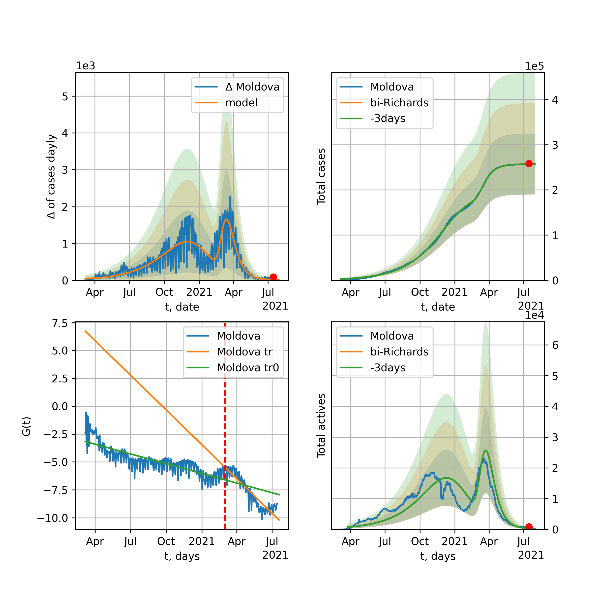

World

World data at: 2021-02-12
10 day model MAPE: 0.002747
model: bi-Richards
coeffs: [4.45851219e+07 1.49590626e+00 9.26410825e+01 1.53602331e-02]
rational stdev: 0.158468
forecast at the end of period: +579 days
deltaDaycases: 6388
total cases: 166060433 ± 26315281
total death: 3656694 ± 1738408
bi-Richards approximation splitting point: 230
actives k: 33
trend coefficient of determination: 0.793973
intercept: -3.157508
slope: -0.009498
trend coefficient of determination: 0.697498
intercept: -2.380251
slope: -0.009734
European Union

European Union data at: 2021-02-12
10 day model MAPE: 0.009234
model: bi-Richards
coeffs: [2.09009924e+07 2.22207265e+00 4.21430469e+01 9.51512418e-03]
rational stdev: 0.269611
forecast at the end of period: +134 days
deltaDaycases: 6060
total cases: 23907253 ± 6445662
total death: 585523 ± 473590
bi-Richards approximation splitting point: 230
actives k: 35
trend coefficient of determination: 0.204398
intercept: -3.530326
slope: -0.009079
trend coefficient of determination: 0.760042
intercept: 0.123104
slope: -0.016502
Brazil

Brazil data at: 2021-02-12
10 day model MAPE: 0.003071
model: bi-Richards
coeffs: [5.88164070e+06 1.32785936e+00 1.18775942e+02 1.57020398e-02]
rational stdev: 0.241828
forecast at the end of period: +169 days
deltaDaycases: 2199
total cases: 12339262 ± 2983976
total death: 300216 ± 217801
bi-Richards approximation splitting point: 220
actives k: 17
trend coefficient of determination: 0.523862
intercept: -2.093645
slope: -0.015007
trend coefficient of determination: 0.064336
intercept: -6.518962
slope: 0.003187
Russia

Russia data at: 2021-02-12
10 day model MAPE: 0.003369
model: bi-Richards
coeffs: [3.88133723e+06 1.41478279e-01 1.48556704e+02 1.43440795e-01]
rational stdev: 0.154727
forecast at the end of period: +239 days
deltaDaycases: 177
total cases: 5006369 ± 774622
total death: 98328 ± 45642
bi-Richards approximation splitting point: 200
actives k: 26
trend coefficient of determination: 0.739004
intercept: -4.328069
slope: -0.017924
trend coefficient of determination: 0.849264
intercept: -3.984456
slope: -0.011350
USA

USA data at: 2021-02-12
10 day model MAPE: 0.005242
model: bi-Richards
coeffs: [2.19842375e+07 1.76688655e+00 1.08353804e+02 1.42060387e-02]
rational stdev: 0.225258
forecast at the end of period: +442 days
deltaDaycases: 108
total cases: 35013324 ± 7887037
total death: 613547 ± 414619
bi-Richards approximation splitting point: 240
actives k: 52
trend coefficient of determination: 0.676913
intercept: -2.837883
slope: -0.012390
trend coefficient of determination: 0.696779
intercept: -1.067019
slope: -0.013243
Spain

Spain data at: 2021-02-12
10 day model MAPE: 0.014751
model: bi-Richards
coeffs: [ 5.64177183e+06 8.26848584e-01 -2.24637180e+02 1.03216426e-02]
rational stdev: 0.189379
forecast at the end of period: +239 days
deltaDaycases: 4271
total cases: 5384354 ± 1019685
total death: 114076 ± 64810
bi-Richards approximation splitting point: 100
actives k: 131
trend coefficient of determination: 0.949152
intercept: -1.368877
slope: -0.063348
trend coefficient of determination: 0.103220
intercept: -6.048069
slope: 0.004021
Italy

Italy data at: 2021-02-12
10 day model MAPE: 0.011767
model: bi-Richards
coeffs: [2.45524125e+06 5.14008786e+00 9.89978848e+01 6.13410999e-03]
rational stdev: 0.214512
forecast at the end of period: +99 days
deltaDaycases: 226
total cases: 2732503 ± 586155
total death: 94259 ± 60659
bi-Richards approximation splitting point: 240
actives k: 28
trend coefficient of determination: 0.273082
intercept: -3.607942
slope: -0.013020
trend coefficient of determination: 0.866145
intercept: 2.144736
slope: -0.022638
United Kingdom

United Kingdom data at: 2021-02-12
10 day model MAPE: 0.002739
model: bi-Richards
coeffs: [2.49771402e+06 1.43328618e-01 1.26751553e+02 5.21298812e-01]
rational stdev: 0.128505
forecast at the end of period: +99 days
deltaDaycases: 6
total cases: 4135016 ± 531372
total death: 119798 ± 46184
bi-Richards approximation splitting point: 125
actives k: 48
trend coefficient of determination: 0.000029
intercept: -11.467309
slope: -0.000093
trend coefficient of determination: 0.862727
intercept: -6.147183
slope: -0.040423
France

France data at: 2021-02-12
10 day model MAPE: 0.005607
model: bi-Richards
coeffs: [1.60903791e+06 1.17761076e-01 2.11027135e+02 5.94948123e-01]
rational stdev: 0.237485
forecast at the end of period: +204 days
deltaDaycases: 14
total cases: 6155417 ± 1461816
total death: 146276 ± 104214
bi-Richards approximation splitting point: 225
actives k: 105
trend coefficient of determination: 0.092525
intercept: -11.009184
slope: -0.006777
trend coefficient of determination: 0.337325
intercept: -8.987541
slope: -0.017012
Germany

Germany data at: 2021-02-12
10 day model MAPE: 0.004999
model: bi-Richards
coeffs: [2.49766817e+06 1.01979812e-01 2.19431756e+02 2.65722918e-01]
rational stdev: 0.189294
forecast at the end of period: +113 days
deltaDaycases: 536
total cases: 2709699 ± 512930
total death: 75620 ± 42943
bi-Richards approximation splitting point: 215
actives k: 17
trend coefficient of determination: 0.342495
intercept: -6.516831
slope: -0.015363
trend coefficient of determination: 0.782317
intercept: -2.642401
slope: -0.019490
Turkey

Turkey data at: 2021-02-12
10 day model MAPE: 0.007707
model: bi-Richards
coeffs: [1.38719723e+06 6.21438688e-02 2.58111046e+02 9.95188300e-01]
rational stdev: 0.208624
forecast at the end of period: +169 days
deltaDaycases: 89
total cases: 2599728 ± 542365
total death: 27576 ± 17259
bi-Richards approximation splitting point: 230
actives k: 17
trend coefficient of determination: 0.571372
intercept: -14.986080
slope: -0.023827
trend coefficient of determination: 0.802804
intercept: -12.309213
slope: -0.025618
Iran

Iran data at: 2021-02-12
10 day model MAPE: 0.013026
model: bi-Richards
coeffs: [9.86345218e+05 3.46988903e-01 1.86679208e+02 8.42162249e-02]
rational stdev: 0.231034
forecast at the end of period: +323 days
deltaDaycases: 13
total cases: 1592659 ± 367958
total death: 62285 ± 43169
bi-Richards approximation splitting point: 200
actives k: 25
trend coefficient of determination: 0.757430
intercept: -2.907765
slope: -0.019913
trend coefficient of determination: 0.274782
intercept: -4.551377
slope: -0.005252
Canada

Canada data at: 2021-02-12
10 day model MAPE: 0.012331
model: bi-Richards
coeffs: [9.44391384e+05 1.15411935e-01 2.09464415e+02 1.85459213e-01]
rational stdev: 0.265886
forecast at the end of period: +505 days
deltaDaycases: 0
total cases: 1095369 ± 291243
total death: 28258 ± 22540
bi-Richards approximation splitting point: 240
actives k: 17
trend coefficient of determination: 0.517486
intercept: -4.332488
slope: -0.017601
trend coefficient of determination: 0.657563
intercept: -2.744122
slope: -0.014345
South Africa

South Africa data at: 2021-02-12
10 day model MAPE: 0.004291
model: bi-Richards
coeffs: [7.97231484e+05 4.15689210e-02 3.10886687e+02 3.68755368e+00]
rational stdev: 1.026801
forecast at the end of period: +29 days
deltaDaycases: 8
total cases: 1483038 ± 1522785
total death: 47521 ± 146383
bi-Richards approximation splitting point: 235
actives k: 17
trend coefficient of determination: 0.863347
intercept: -24.050092
slope: -0.168971
trend coefficient of determination: 0.449534
intercept: -49.306384
slope: -0.023866
Belgium

Belgium data at: 2021-02-12
10 day model MAPE: 0.001258
model: bi-Richards
coeffs: [3.81437840e+05 2.78606564e-01 2.04006104e+02 4.75185696e-01]
rational stdev: 0.201615
forecast at the end of period: +274 days
deltaDaycases: 49
total cases: 1834300 ± 369822
total death: 53887 ± 32593
bi-Richards approximation splitting point: 230
actives k: 61
trend coefficient of determination: 0.039622
intercept: -9.487441
slope: -0.004655
trend coefficient of determination: 0.327744
intercept: -8.557873
slope: -0.012331
Peru

Peru data at: 2021-02-12
10 day model MAPE: 0.008662
model: bi-Richards
coeffs: [2.49578908e+05 7.82851016e+00 2.50108460e+02 8.39322200e-03]
rational stdev: 0.317151
forecast at the end of period: +99 days
deltaDaycases: 102
total cases: 1335192 ± 423458
total death: 47310 ± 45013
bi-Richards approximation splitting point: 265
actives k: 21
trend coefficient of determination: 0.905239
intercept: -1.922833
slope: -0.017454
trend coefficient of determination: 0.650687
intercept: -12.759042
slope: 0.022107
Netherlands

Netherlands data at: 2021-02-12
10 day model MAPE: 0.004739
model: bi-Richards
coeffs: [1.23979435e+06 1.38067355e+00 1.58897975e+01 1.30268095e-02]
rational stdev: 0.217853
forecast at the end of period: +239 days
deltaDaycases: 78
total cases: 1309712 ± 285324
total death: 18879 ± 12338
bi-Richards approximation splitting point: 205
actives k: 35
trend coefficient of determination: 0.152582
intercept: -3.751889
slope: -0.010852
trend coefficient of determination: 0.828328
intercept: 0.102126
slope: -0.017172
India

India data at: 2021-02-12
10 day model MAPE: 0.000742
model: bi-Richards
coeffs: [ 7.09685851e+06 1.81628181e+00 -5.61981792e+00 1.28973680e-02]
rational stdev: 0.197725
forecast at the end of period: +239 days
deltaDaycases: 125
total cases: 11291372 ± 2232589
total death: 161284 ± 95669
bi-Richards approximation splitting point: 92
actives k: 13
trend coefficient of determination: 0.600803
intercept: -1.922843
slope: -0.017058
trend coefficient of determination: 0.964708
intercept: -1.378048
slope: -0.016763
Switzerland

Switzerland data at: 2021-02-12
10 day model MAPE: 0.004127
model: bi-Richards
coeffs: [5.22914991e+05 3.30920958e+00 9.15254867e+01 9.27603134e-03]
rational stdev: 0.206955
forecast at the end of period: +64 days
deltaDaycases: 138
total cases: 559413 ± 115773
total death: 10083 ± 6260
bi-Richards approximation splitting point: 215
actives k: 43
trend coefficient of determination: 0.091038
intercept: -4.491797
slope: -0.007971
trend coefficient of determination: 0.877847
intercept: 2.204198
slope: -0.024529
Ecuador

Ecuador data at: 2021-02-12
10 day model MAPE: 0.011900
model: bi-Richards
coeffs: [ 2.39226088e+05 1.19842308e+00 -1.93918555e+02 9.69243271e-03]
rational stdev: 0.077364
forecast at the end of period: +99 days
deltaDaycases: 212
total cases: 285185 ± 22063
total death: 16471 ± 3822
bi-Richards approximation splitting point: 80
actives k: 26
trend coefficient of determination: 0.273670
intercept: -2.218710
slope: -0.047310
trend coefficient of determination: 0.122194
intercept: -4.286222
slope: -0.005163
Portugal

Portugal data at: 2021-02-12
10 day model MAPE: 0.020523
model: bi-Richards
coeffs: [4.36729049e+05 3.69038355e-01 2.98767351e+02 2.34770264e-01]
rational stdev: 0.975014
forecast at the end of period: +99 days
deltaDaycases: 0
total cases: 841570 ± 820543
total death: 16195 ± 47371
bi-Richards approximation splitting point: 305
actives k: 21
trend coefficient of determination: 0.291284
intercept: -5.364732
slope: -0.009136
trend coefficient of determination: 0.362037
intercept: 2.392770
slope: -0.030376
Saudi Arabia

Saudi Arabia data at: 2021-02-12
10 day model MAPE: 0.003839
model: bi-Richards
coeffs: [1.74983265e+04 1.39071629e+00 1.26575984e+02 1.88571719e-02]
rational stdev: 0.102939
forecast at the end of period: +99 days
deltaDaycases: 10
total cases: 374010 ± 38500
total death: 6457 ± 1994
bi-Richards approximation splitting point: 300
actives k: 17
trend coefficient of determination: 0.978138
intercept: -2.078025
slope: -0.021971
trend coefficient of determination: 0.910081
intercept: -17.220562
slope: 0.030405
Sweden

Sweden data at: 2021-02-12
10 day model MAPE: 0.000540
model: bi-Richards
coeffs: [5.90018492e+05 2.51338398e-01 2.12274204e+02 1.19590082e-01]
rational stdev: 0.198337
forecast at the end of period: +134 days
deltaDaycases: 50
total cases: 689978 ± 136848
total death: 14094 ± 8386
bi-Richards approximation splitting point: 240
actives k: 35
trend coefficient of determination: 0.725028
intercept: -3.086418
slope: -0.020929
trend coefficient of determination: 0.721503
intercept: -0.657689
slope: -0.017635
Pakistan

Pakistan data at: 2021-02-12
10 day model MAPE: 0.002149
model: bi-Richards
coeffs: [2.77380757e+05 2.27974898e+00 1.04021064e+02 1.25157342e-02]
rational stdev: 2.136503
forecast at the end of period: +134 days
deltaDaycases: 27
total cases: 597929 ± 1277477
total death: 13069 ± 83765
bi-Richards approximation splitting point: 260
actives k: 26
trend coefficient of determination: 0.669205
intercept: -2.642321
slope: -0.016650
trend coefficient of determination: 0.797035
intercept: -0.783240
slope: -0.016516
Ireland

Ireland data at: 2021-02-12
10 day model MAPE: 0.014542
model: bi-Richards
coeffs: [1.30802924e+05 2.20953534e-01 5.28591964e+01 6.22810106e-01]
rational stdev: 0.021606
forecast at the end of period: +29 days
deltaDaycases: 3
total cases: 203883 ± 4405
total death: 3793 ± 245
bi-Richards approximation splitting point: 55
actives k: 61
trend coefficient of determination: 0.134091
intercept: -12.484426
slope: 0.010625
trend coefficient of determination: 0.885535
intercept: -6.053902
slope: -0.076128
Mexico

Mexico data at: 2021-02-12
10 day model MAPE: 0.008209
model: bi-Richards
coeffs: [1.68123529e+06 1.20067163e+00 1.03437764e+02 1.60358306e-02]
rational stdev: 0.268028
forecast at the end of period: +449 days
deltaDaycases: 8
total cases: 2997320 ± 803367
total death: 261354 ± 210150
bi-Richards approximation splitting point: 260
actives k: 17
trend coefficient of determination: 0.915467
intercept: -1.993502
slope: -0.015684
trend coefficient of determination: 0.082956
intercept: -3.655363
slope: -0.004994
Singapore

Singapore data at: 2021-02-12
10 day model MAPE: 0.000710
model: bi-Richards
coeffs: [1.05347934e+03 5.53430251e-01 1.77397405e+02 2.66806844e-01]
rational stdev: 15105.957287
forecast at the end of period: +99 days
deltaDaycases: 0
total cases: 58753 ± 887522263
total death: 28 ± 1268900
bi-Richards approximation splitting point: 240
actives k: 26
trend coefficient of determination: 0.838938
intercept: -2.890842
slope: -0.031792
trend coefficient of determination: 0.213842
intercept: -14.206404
slope: 0.008727
Chile

Chile data at: 2021-02-12
10 day model MAPE: 0.006176
model: bi-Richards
coeffs: [9.00415824e+05 7.36028514e-01 6.88469439e+01 1.85936075e-02]
S.Korea scenario coeffs: [0.36242246, 2.56241634, 1.84890887, 0.13324732]
rational stdev: 0.224512
forecast at the end of period: +519 days
deltaDaycases: 13
total cases: 1439867 ± 323267
total death: 36246 ± 24412
bi-Richards approximation splitting point: 280
actives k: 10
trend coefficient of determination: 0.893267
intercept: -2.045548
slope: -0.018114
trend coefficient of determination: 0.347839
intercept: -8.548787
slope: 0.009261
Israel

Israel data at: 2021-02-12
10 day model MAPE: 0.015654
model: bi-Richards
coeffs: [4.53045315e+05 4.95609742e-02 3.00412276e+02 1.77719593e+00]
rational stdev: 0.311173
forecast at the end of period: +64 days
deltaDaycases: 17
total cases: 759845 ± 236443
total death: 5607 ± 5234
bi-Richards approximation splitting point: 248
actives k: 11
trend coefficient of determination: 0.804134
intercept: -19.371908
slope: -0.037638
trend coefficient of determination: 0.061398
intercept: -26.122036
slope: -0.006573
Austria

Austria data at: 2021-02-12
10 day model MAPE: 0.009033
model: bi-Richards
coeffs: [3.76819898e+05 2.50646275e+00 1.44441809e+02 1.55055991e-02]
rational stdev: 0.304136
forecast at the end of period: +85 days
deltaDaycases: 93
total cases: 434431 ± 132126
total death: 8237 ± 7515
bi-Richards approximation splitting point: 210
actives k: 13
trend coefficient of determination: 0.162523
intercept: -3.725917
slope: -0.011117
trend coefficient of determination: 0.655574
intercept: 0.385009
slope: -0.018185
Belarus

Belarus data at: 2021-02-12
10 day model MAPE: 0.001683
model: bi-Richards
coeffs: [2.78685422e+05 1.52788656e-01 1.55560829e+02 1.27489898e-01]
rational stdev: 0.108904
forecast at the end of period: +309 days
deltaDaycases: 5
total cases: 352912 ± 38433
total death: 2434 ± 795
bi-Richards approximation splitting point: 220
actives k: 21
trend coefficient of determination: 0.537816
intercept: -4.117483
slope: -0.017890
trend coefficient of determination: 0.605800
intercept: -3.556567
slope: -0.010017
Japan

Japan data at: 2021-02-12
10 day model MAPE: 0.021193
model: bi-Richards
coeffs: [2.84302858e+05 5.90009571e-02 3.41827137e+02 1.31462453e+00]
rational stdev: 0.411388
forecast at the end of period: +211 days
deltaDaycases: 8
total cases: 454607 ± 187020
total death: 7479 ± 9230
bi-Richards approximation splitting point: 310
actives k: 11
trend coefficient of determination: 0.689808
intercept: -11.853234
slope: -0.033097
trend coefficient of determination: 0.785030
intercept: -8.625260
slope: -0.035634
China

China data at: 2021-02-12
10 day model MAPE: 0.002581
model: bi-Richards
coeffs: [ 1.26179348e+04 8.53825217e-01 -5.89443576e+02 6.67214174e-03]
rational stdev: 0.062969
forecast at the end of period: +99 days
deltaDaycases: 17
total cases: 90883 ± 5722
total death: 4694 ± 886
bi-Richards approximation splitting point: 120
actives k: 17
trend coefficient of determination: 0.817998
intercept: -2.261154
slope: -0.076365
trend coefficient of determination: 0.187253
intercept: -10.171246
slope: 0.005932
Qatar

Qatar data at: 2021-02-12
10 day model MAPE: 0.006888
model: bi-Richards
coeffs: [ 5.11569147e+04 1.25708791e+00 -1.55656612e+02 9.99984297e-03]
S.Korea scenario coeffs: [0.36242246, 2.56241634, 1.84890887, 0.13324732]
rational stdev: 0.071870
forecast at the end of period: +29 days
deltaDaycases: 100
total cases: 155502 ± 11175
total death: 252 ± 54
bi-Richards approximation splitting point: 144
actives k: 17
trend coefficient of determination: 0.918133
intercept: -1.936955
slope: -0.030838
trend coefficient of determination: 0.020807
intercept: -6.347422
slope: -0.000828
Poland

Poland data at: 2021-02-12
10 day model MAPE: 0.008328
model: bi-Richards
coeffs: [1.42645857e+06 3.83865310e+00 1.19619432e+02 9.62273704e-03]
rational stdev: 0.256587
forecast at the end of period: +169 days
deltaDaycases: 102
total cases: 1599862 ± 410503
total death: 41009 ± 31567
bi-Richards approximation splitting point: 200
actives k: 21
trend coefficient of determination: 0.682912
intercept: -2.363533
slope: -0.016101
trend coefficient of determination: 0.662915
intercept: 0.945012
slope: -0.020042
UAE

UAE data at: 2021-02-12
10 day model MAPE: 0.017212
model: bi-Richards
coeffs: [ 2.75847183e+06 2.72262874e-01 -3.61077120e+02 1.73611481e-02]
rational stdev: 0.105960
forecast at the end of period: +589 days
deltaDaycases: 1641
total cases: 2441878 ± 258742
total death: 7020 ± 2231
bi-Richards approximation splitting point: 128
actives k: 11
trend coefficient of determination: 0.943703
intercept: -2.168267
slope: -0.028888
trend coefficient of determination: 0.165465
intercept: -5.699177
slope: 0.003037
Romania

Romania data at: 2021-02-12
10 day model MAPE: 0.005604
model: bi-Richards
coeffs: [6.24968931e+05 2.70468084e+00 1.17061254e+02 1.22064214e-02]
rational stdev: 0.275111
forecast at the end of period: +92 days
deltaDaycases: 59
total cases: 776399 ± 213596
total death: 19753 ± 16302
bi-Richards approximation splitting point: 220
actives k: 17
trend coefficient of determination: 0.429270
intercept: -2.815180
slope: -0.009952
trend coefficient of determination: 0.804555
intercept: 1.004627
slope: -0.020744
Panama

Panama data at: 2021-02-12
10 day model MAPE: 0.001435
model: bi-Richards
coeffs: [1.99549191e+05 5.34764424e-02 2.90741683e+02 1.31008674e+00]
rational stdev: 0.232094
forecast at the end of period: +71 days
deltaDaycases: 10
total cases: 340852 ± 79109
total death: 5761 ± 4011
bi-Richards approximation splitting point: 229
actives k: 17
trend coefficient of determination: 0.826502
intercept: -11.235313
slope: -0.049183
trend coefficient of determination: 0.545072
intercept: -15.883870
slope: -0.017931
Ukraine

Ukraine data at: 2021-02-12
10 day model MAPE: 0.013570
model: bi-Richards
coeffs: [ 3.59744391e+05 2.98276050e+00 -5.33736013e+01 6.69742060e-03]
rational stdev: 0.034459
forecast at the end of period: +29 days
deltaDaycases: 817
total cases: 1257771 ± 43341
total death: 24088 ± 2490
bi-Richards approximation splitting point: 185
actives k: 35
trend coefficient of determination: 0.000027
intercept: -4.077526
slope: 0.000021
trend coefficient of determination: 0.877130
intercept: 1.143263
slope: -0.026378
Indonesia

Indonesia data at: 2021-02-12
10 day model MAPE: 0.012148
model: bi-Richards
coeffs: [1.33620427e+06 5.19925514e-01 1.75526545e+02 3.96699917e-02]
rational stdev: 0.217510
forecast at the end of period: +407 days
deltaDaycases: 19
total cases: 2316154 ± 503787
total death: 62932 ± 41065
bi-Richards approximation splitting point: 260
actives k: 17
trend coefficient of determination: 0.737945
intercept: -2.955854
slope: -0.010307
trend coefficient of determination: 0.001054
intercept: -5.232190
slope: 0.000409
Bangladesh

Bangladesh data at: 2021-02-12
10 day model MAPE: 0.000941
model: bi-Richards
coeffs: [1.30511205e+05 7.30972156e-02 2.45236383e+02 6.15551756e-01]
rational stdev: 0.170405
forecast at the end of period: +127 days
deltaDaycases: 4
total cases: 545519 ± 92959
total death: 8337 ± 4261
bi-Richards approximation splitting point: 210
actives k: 35
trend coefficient of determination: 0.860764
intercept: -5.354502
slope: -0.044638
trend coefficient of determination: 0.718046
intercept: -9.689732
slope: -0.015915
South_Korea

South Korea data at: 2021-02-12
10 day model MAPE: 0.007082
model: bi-Richards
coeffs: [3.93289070e+04 7.87198578e-02 2.75444993e+02 1.12988271e+00]
rational stdev: 0.069249
forecast at the end of period: +659 days
deltaDaycases: 0
total cases: 223786 ± 15496
total death: 4072 ± 845
bi-Richards approximation splitting point: 220
actives k: 26
trend coefficient of determination: 0.034518
intercept: -16.151887
slope: -0.002592
trend coefficient of determination: 0.376480
intercept: -12.890754
slope: -0.014558
Moldova

Moldova data at: 2021-02-12
10 day model MAPE: 0.009076
model: bi-Richards
coeffs: [7.45442316e+04 3.87139094e-02 2.69955668e+02 1.59057698e+00]
rational stdev: 0.248189
forecast at the end of period: +379 days
deltaDaycases: 9
total cases: 191187 ± 47450
total death: 4106 ± 3057
bi-Richards approximation splitting point: 190
actives k: 17
trend coefficient of determination: 0.761417
intercept: -10.678718
slope: -0.069847
trend coefficient of determination: 0.821990
intercept: -16.539620
slope: -0.025127
Denmark

Denmark data at: 2021-02-12
10 day model MAPE: 0.005486
model: bi-Richards
coeffs: [1.85865715e+05 3.13069913e-02 2.46244499e+02 3.02858091e+00]
rational stdev: 0.158683
forecast at the end of period: +99 days
deltaDaycases: 0
total cases: 202459 ± 32126
total death: 2265 ± 1078
bi-Richards approximation splitting point: 240
actives k: 17
trend coefficient of determination: 0.566588
intercept: -32.690339
slope: -0.020815
trend coefficient of determination: 0.953568
intercept: -22.788570
slope: -0.070956
Serbia

Serbia data at: 2021-02-12
10 day model MAPE: 0.012641
model: bi-Richards
coeffs: [3.80345140e+05 4.61893747e-01 2.02346012e+02 1.07620182e-01]
rational stdev: 0.227512
forecast at the end of period: +99 days
deltaDaycases: 3
total cases: 412559 ± 93862
total death: 4145 ± 2829
bi-Richards approximation splitting point: 195
actives k: 105
trend coefficient of determination: 0.604121
intercept: -3.682222
slope: -0.019258
trend coefficient of determination: 0.161672
intercept: -2.956836
slope: -0.010643
Kuwait

Kuwait data at: 2021-02-12
10 day model MAPE: 0.008136
model: bi-Richards
coeffs: [ 1.63031491e+05 1.07091741e+00 -2.06077630e+02 1.13880277e-02]
rational stdev: 0.195521
forecast at the end of period: +148 days
deltaDaycases: 40
total cases: 182095 ± 35603
total death: 1026 ± 601
bi-Richards approximation splitting point: 90
actives k: 17
trend coefficient of determination: 0.171848
intercept: -2.542928
slope: -0.009888
trend coefficient of determination: 0.672948
intercept: -3.655036
slope: -0.007980
Philippines

Philippines data at: 2021-02-12
10 day model MAPE: 0.007768
model: bi-Richards
coeffs: [ 5.47513822e+05 1.74493206e+00 -1.19296988e+02 9.43759164e-03]
rational stdev: 0.285320
forecast at the end of period: +155 days
deltaDaycases: 45
total cases: 549164 ± 156687
total death: 11547 ± 9883
bi-Richards approximation splitting point: 36
actives k: 17
trend coefficient of determination: 0.418753
intercept: -1.302494
slope: -0.059024
trend coefficient of determination: 0.764721
intercept: -2.882357
slope: -0.010025
Norway

Norway data at: 2021-02-12
10 day model MAPE: 0.004673
model: bi-Richards
coeffs: [7.18194016e+04 6.82007462e-02 2.28899237e+02 3.25824488e-01]
rational stdev: 0.182154
forecast at the end of period: +155 days
deltaDaycases: 12
total cases: 80824 ± 14722
total death: 722 ± 394
bi-Richards approximation splitting point: 200
actives k: 26
trend coefficient of determination: 0.415171
intercept: -5.489248
slope: -0.024508
trend coefficient of determination: 0.393170
intercept: -5.477501
slope: -0.009256
Czechia

Czechia data at: 2021-02-12
10 day model MAPE: 0.010296
model: bi-Richards
coeffs: [6.53577672e+05 5.13880018e+00 4.35844607e+01 5.18155779e-03]
rational stdev: 0.440606
forecast at the end of period: +85 days
deltaDaycases: 131
total cases: 1114724 ± 491153
total death: 18589 ± 24571
bi-Richards approximation splitting point: 210
actives k: 17
trend coefficient of determination: 0.076212
intercept: -3.571642
slope: -0.005607
trend coefficient of determination: 0.483092
intercept: -0.064104
slope: -0.015437
Colombia

Colombia data at: 2021-02-12
10 day model MAPE: 0.006400
model: bi-Richards
coeffs: [4.68585273e+05 3.71116946e-01 2.75534226e+02 1.92522660e-01]
rational stdev: 0.187103
forecast at the end of period: +239 days
deltaDaycases: 305
total cases: 2603478 ± 487118
total death: 68145 ± 38250
bi-Richards approximation splitting point: 300
actives k: 11
trend coefficient of determination: 0.882599
intercept: -3.561240
slope: -0.016751
trend coefficient of determination: 0.859788
intercept: 4.895425
slope: -0.040139
Australia

Australia data at: 2021-02-12
10 day model MAPE: 0.001567
model: bi-Richards
coeffs: [2.11211757e+04 2.22919316e-01 1.04780053e+02 2.82642976e-01]
rational stdev: 0.047202
forecast at the end of period: +15 days
deltaDaycases: 0
total cases: 28054 ± 1324
total death: 882 ± 124
bi-Richards approximation splitting point: 104
actives k: 26
trend coefficient of determination: 0.538220
intercept: -5.503529
slope: -0.044252
trend coefficient of determination: 0.728872
intercept: -4.471299
slope: -0.023099
Malaysia

Malaysia data at: 2021-02-12
10 day model MAPE: 0.000000
model: bi-Richards
coeffs: [ 4.28645851e+03 -7.51795117e-01 1.77516071e+02 1.85159364e-01]
rational stdev: 0.317339
forecast at the end of period: +379 days
deltaDaycases: 0
total cases: 421069 ± 133621
total death: 1553 ± 1478
bi-Richards approximation splitting point: 280
actives k: 15
trend coefficient of determination: 0.063778
intercept: -5.717671
slope: -0.006224
trend coefficient of determination: 0.076005
intercept: -5.204879
slope: -0.003184
Dominican Republic

Dominican Republic data at: 2021-02-12
10 day model MAPE: 0.004200
model: bi-Richards
coeffs: [ 6.95574936e+05 3.43640769e-01 -1.34014942e+02 2.11451121e-02]
rational stdev: 0.171487
forecast at the end of period: +589 days
deltaDaycases: 120
total cases: 784682 ± 134562
total death: 10049 ± 5169
bi-Richards approximation splitting point: 200
actives k: 35
trend coefficient of determination: 0.789743
intercept: -2.650787
slope: -0.015637
trend coefficient of determination: 0.241108
intercept: -7.276009
slope: 0.006336
Egypt

Egypt data at: 2021-02-12
10 day model MAPE: 0.011534
model: bi-Richards
coeffs: [7.29574968e+04 2.55600000e-02 3.08089337e+02 5.44667502e+00]
rational stdev: 0.141302
forecast at the end of period: +99 days
deltaDaycases: 0
total cases: 171305 ± 24205
total death: 9824 ± 4164
bi-Richards approximation splitting point: 170
actives k: 43
trend coefficient of determination: 0.915493
intercept: -37.595569
slope: -0.226647
trend coefficient of determination: 0.337853
intercept: -67.637967
slope: -0.008072
Finland

Finland data at: 2021-02-12
10 day model MAPE: 0.012772
model: bi-Richards
coeffs: [5.77434701e+04 6.25866338e-01 5.44918743e+01 2.65202726e-02]
rational stdev: 0.119811
forecast at the end of period: +134 days
deltaDaycases: 35
total cases: 63413 ± 7597
total death: 908 ± 326
bi-Richards approximation splitting point: 210
actives k: 26
trend coefficient of determination: 0.381778
intercept: -3.311060
slope: -0.020468
trend coefficient of determination: 0.255284
intercept: -2.918602
slope: -0.006979
Morocco

Morocco data at: 2021-02-12
10 day model MAPE: 0.001464
model: bi-Richards
coeffs: [3.25921790e+05 3.34941110e+00 1.22930267e+02 1.18713907e-02]
rational stdev: 0.345764
forecast at the end of period: +99 days
deltaDaycases: 6
total cases: 483490 ± 167173
total death: 8553 ± 8871
bi-Richards approximation splitting point: 210
actives k: 11
trend coefficient of determination: 0.171589
intercept: -3.131922
slope: -0.006209
trend coefficient of determination: 0.874038
intercept: 2.196231
slope: -0.027584
Uzbekistan

Uzbekistan data at: 2021-02-12
10 day model MAPE: 0.001186
model: bi-Richards
coeffs: [1.85443157e+04 5.04925208e+00 4.37196657e+01 5.81702088e-03]
rational stdev: 0.384405
forecast at the end of period: +64 days
deltaDaycases: 3
total cases: 79670 ± 30625
total death: 624 ± 719
bi-Richards approximation splitting point: 200
actives k: 11
trend coefficient of determination: 0.460651
intercept: -2.617495
slope: -0.011042
trend coefficient of determination: 0.872274
intercept: -1.137720
slope: -0.019788
Argentina

Argentina data at: 2021-02-12
10 day model MAPE: 0.008618
model: bi-Richards
coeffs: [ 1.41558738e+06 9.25320220e-01 -1.11039628e+02 1.21918297e-02]
rational stdev: 0.223774
forecast at the end of period: +169 days
deltaDaycases: 1272
total cases: 2512592 ± 562252
total death: 62368 ± 41868
bi-Richards approximation splitting point: 180
actives k: 16
trend coefficient of determination: 0.048121
intercept: -3.014396
slope: -0.004748
trend coefficient of determination: 0.654267
intercept: -2.097898
slope: -0.011670
Algeria

Algeria data at: 2021-02-12
10 day model MAPE: 0.007115
model: bi-Richards
coeffs: [5.68189220e+04 9.39707869e-01 1.52371812e+02 4.58171808e-02]
rational stdev: 0.098336
forecast at the end of period: +29 days
deltaDaycases: 19
total cases: 109115 ± 10729
total death: 2900 ± 855
bi-Richards approximation splitting point: 220
actives k: 35
trend coefficient of determination: 0.756371
intercept: -3.453851
slope: -0.012402
trend coefficient of determination: 0.887320
intercept: 0.651349
slope: -0.024603
Luxembourg

Luxembourg data at: 2021-02-12
10 day model MAPE: 0.004254
model: bi-Richards
coeffs: [3.91187355e+04 4.50792529e-01 1.87749833e+02 9.63630220e-02]
rational stdev: 0.237814
forecast at the end of period: +365 days
deltaDaycases: 11
total cases: 61189 ± 14551
total death: 705 ± 502
bi-Richards approximation splitting point: 180
actives k: 17
trend coefficient of determination: 0.144840
intercept: -4.633106
slope: -0.013021
trend coefficient of determination: 0.269172
intercept: -2.603010
slope: -0.012496
Thailand

Thailand data at: 2021-02-12
10 day model MAPE: 0.070381
model: bi-Richards
coeffs: [6.17995592e+04 1.26359543e-01 2.57750260e+02 2.30852268e-01]
rational stdev: 0.039239
forecast at the end of period: +379 days
deltaDaycases: 0
total cases: 65543 ± 2571
total death: 214 ± 25
bi-Richards approximation splitting point: 230
actives k: 17
trend coefficient of determination: 0.007273
intercept: -8.519902
slope: -0.001708
trend coefficient of determination: 0.187546
intercept: -11.530088
slope: 0.018924
Hungary

Hungary data at: 2021-02-12
10 day model MAPE: 0.009298
model: bi-Richards
coeffs: [3.73349606e+05 5.41195133e-02 2.14682583e+02 9.69197137e-01]
rational stdev: 0.089658
forecast at the end of period: +64 days
deltaDaycases: 10
total cases: 377436 ± 33840
total death: 13341 ± 3588
bi-Richards approximation splitting point: 140
actives k: 43
trend coefficient of determination: 0.160103
intercept: -12.338297
slope: -0.013466
trend coefficient of determination: 0.950461
intercept: -5.669927
slope: -0.044314
Greece

Greece data at: 2021-02-12
10 day model MAPE: 0.010850
model: bi-Richards
coeffs: [1.18308941e+05 6.30632029e-02 2.31302950e+02 1.13191800e+00]
rational stdev: 0.148055
forecast at the end of period: +134 days
deltaDaycases: 0
total cases: 165103 ± 24444
total death: 5893 ± 2617
bi-Richards approximation splitting point: 180
actives k: 105
trend coefficient of determination: 0.117933
intercept: -13.319737
slope: -0.007986
trend coefficient of determination: 0.863013
intercept: -8.015348
slope: -0.036396
Iraq

Iraq data at: 2021-02-12
10 day model MAPE: 0.000237
model: bi-Richards
coeffs: [-2.62595862e+03 1.68913301e-01 5.19027088e+01 3.87369430e+00]
rational stdev: 0.179710
forecast at the end of period: +211 days
deltaDaycases: 13
total cases: 678824 ± 121991
total death: 13967 ± 7530
bi-Richards approximation splitting point: 300
actives k: 17
trend coefficient of determination: 0.907271
intercept: -28.732047
slope: -0.117430
trend coefficient of determination: 0.559016
intercept: -65.383187
slope: 0.022999
Croatia

Croatia data at: 2021-02-12
10 day model MAPE: 0.004870
model: bi-Richards
coeffs: [1.30327551e+05 1.22013256e-01 2.30800142e+02 5.04176043e-01]
rational stdev: 0.401303
forecast at the end of period: +99 days
deltaDaycases: 0
total cases: 233650 ± 93764
total death: 5205 ± 6266
bi-Richards approximation splitting point: 210
actives k: 11
trend coefficient of determination: 0.029002
intercept: -8.267049
slope: -0.005719
trend coefficient of determination: 0.870694
intercept: 1.019635
slope: -0.042721
Iceland

Iceland data at: 2021-02-12
10 day model MAPE: 0.003777
model: bi-Richards
coeffs: [4.11460210e+03 7.98544879e-02 2.08073107e+02 6.40634486e-01]
rational stdev: 0.153032
forecast at the end of period: +99 days
deltaDaycases: 0
total cases: 5896 ± 902
total death: 28 ± 12
bi-Richards approximation splitting point: 170
actives k: 17
trend coefficient of determination: 0.258193
intercept: -8.167831
slope: -0.029869
trend coefficient of determination: 0.548823
intercept: -5.809296
slope: -0.020963
Estonia

Estonia data at: 2021-02-12
10 day model MAPE: 0.016079
model: bi-Richards
coeffs: [6.83057987e+04 6.83505609e-02 2.59528135e+02 3.96598874e-01]
rational stdev: 0.153410
forecast at the end of period: +134 days
deltaDaycases: 18
total cases: 70071 ± 10749
total death: 667 ± 306
bi-Richards approximation splitting point: 200
actives k: 26
trend coefficient of determination: 0.186627
intercept: -6.951293
slope: -0.015216
trend coefficient of determination: 0.208668
intercept: -5.600393
slope: -0.008613
Bulgaria

Bulgaria data at: 2021-02-12
10 day model MAPE: 0.008077
model: bi-Richards
coeffs: [2.02264711e+05 6.21717167e-01 1.81713982e+02 7.55484375e-02]
rational stdev: 0.177667
forecast at the end of period: +29 days
deltaDaycases: 37
total cases: 223934 ± 39785
total death: 9381 ± 5000
bi-Richards approximation splitting point: 210
actives k: 35
trend coefficient of determination: 0.474945
intercept: -3.399435
slope: -0.011872
trend coefficient of determination: 0.693246
intercept: 2.926761
slope: -0.031440
New Zealand

New Zealand data at: 2021-02-12
10 day model MAPE: 0.002158
model: bi-Richards
coeffs: [ 1.05680346e+03 1.16546848e+00 -2.17346370e+02 9.60381803e-03]
rational stdev: 0.016559
forecast at the end of period: +29 days
deltaDaycases: 1
total cases: 2370 ± 39
total death: 25 ± 1
bi-Richards approximation splitting point: 100
actives k: 17
trend coefficient of determination: 0.536287
intercept: -3.228910
slope: -0.080913
trend coefficient of determination: 0.019735
intercept: -7.306999
slope: 0.002255
Slovenia

Slovenia data at: 2021-02-12
10 day model MAPE: 0.002397
model: bi-Richards
coeffs: [2.06871916e+05 1.83633156e+00 5.53325310e+01 1.14818089e-02]
rational stdev: 0.244434
forecast at the end of period: +274 days
deltaDaycases: 3
total cases: 249307 ± 60939
total death: 5167 ± 3788
bi-Richards approximation splitting point: 200
actives k: 17
trend coefficient of determination: 0.031366
intercept: -4.501857
slope: -0.006039
trend coefficient of determination: 0.264295
intercept: -0.365684
slope: -0.014495
Slovakia

Slovakia data at: 2021-02-12
10 day model MAPE: 0.003747
model: bi-Richards
coeffs: [ 4.24181462e+05 1.10109820e+00 -4.61259658e+00 1.36892653e-02]
rational stdev: 0.272032
forecast at the end of period: +274 days
deltaDaycases: 51
total cases: 429557 ± 116853
total death: 8990 ± 7336
bi-Richards approximation splitting point: 170
actives k: 30
trend coefficient of determination: 0.120560
intercept: -3.728781
slope: -0.013663
trend coefficient of determination: 0.339614
intercept: -1.478366
slope: -0.010759
Lithuania

Lithuania data at: 2021-02-12
10 day model MAPE: 0.000423
model: bi-Richards
coeffs: [1.88721509e+05 6.61915470e-02 2.31658800e+02 8.08845368e-01]
rational stdev: 0.070152
forecast at the end of period: +155 days
deltaDaycases: 34
total cases: 206855 ± 14511
total death: 3323 ± 699
bi-Richards approximation splitting point: 190
actives k: 35
trend coefficient of determination: 0.010262
intercept: -11.353061
slope: 0.001616
trend coefficient of determination: 0.963263
intercept: -0.768984
slope: -0.050092
Latvia

Latvia data at: 2021-02-12
10 day model MAPE: 0.002657
model: bi-Richards
coeffs: [1.08527619e+05 8.00798583e-02 2.42860721e+02 3.14542665e-01]
rational stdev: 0.132148
forecast at the end of period: +274 days
deltaDaycases: 1
total cases: 110029 ± 14540
total death: 2085 ± 826
bi-Richards approximation splitting point: 210
actives k: 25
trend coefficient of determination: 0.115530
intercept: -6.450890
slope: -0.010223
trend coefficient of determination: 0.660124
intercept: -1.551298
slope: -0.020032
Cyprus

Cyprus data at: 2021-02-12
10 day model MAPE: 0.003770
model: bi-Richards
coeffs: [3.10752941e+04 4.53621629e-02 2.81022079e+02 1.33206398e+00]
rational stdev: 0.237923
forecast at the end of period: +344 days
deltaDaycases: 1
total cases: 34626 ± 8238
total death: 234 ± 167
bi-Richards approximation splitting point: 215
actives k: 70
trend coefficient of determination: 0.314819
intercept: -11.669135
slope: -0.022973
trend coefficient of determination: 0.942341
intercept: -2.760158
slope: -0.050685
Malta

Malta data at: 2021-02-12
10 day model MAPE: 0.012475
model: bi-Richards
coeffs: [ 3.68429719e+04 8.34785144e-01 -2.15302660e+02 1.08026719e-02]
rational stdev: 0.139800
forecast at the end of period: +190 days
deltaDaycases: 47
total cases: 35652 ± 4984
total death: 526 ± 220
bi-Richards approximation splitting point: 170
actives k: 17
trend coefficient of determination: 0.080490
intercept: -6.522743
slope: 0.011489
trend coefficient of determination: 0.464201
intercept: -2.411602
slope: -0.009048
Sri Lanka

Sri Lanka data at: 2021-02-12
10 day model MAPE: 0.016895
model: bi-Richards
coeffs: [1.28667558e+05 8.05280869e-01 8.52517058e+00 1.78903495e-02]
rational stdev: 0.166600
forecast at the end of period: +309 days
deltaDaycases: 13
total cases: 129811 ± 21626
total death: 673 ± 336
bi-Richards approximation splitting point: 120
actives k: 17
trend coefficient of determination: 0.215997
intercept: -3.205255
slope: -0.022255
trend coefficient of determination: 0.341665
intercept: -7.990095
slope: 0.013399
References
- Worldometers COVID-19 Coronavirus Pandemic
- Su COVID-19 susijusi gyventojų ir verslo statistika
- Bi-logistic growth
- Least squares
- scikit-learn
- scipy.org
- European Centre for Disease Prevention and Control An agency of the European Union
- Aaron Miller, Mac Josh Reandelar, Kimberly Fasciglione, Violeta Roumenova, Yan Li, Gonzalo H Otazu, Correlation between universal BCG vaccination policy and reduced morbidity and mortality for COVID-19: an epidemiological study, https://doi.org/10.1101/2020.03.24.20042937
- c19.se